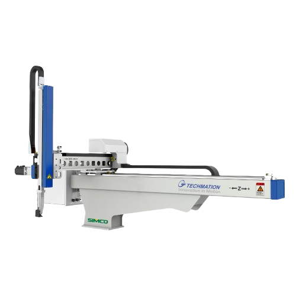

Robô industrial • 3 eixos
Robô que se movimenta em três eixos lineares (X, Y e Z), formando um sistema de coordenadas retangulares.

Os robôs cartesianos são manipuladores que utilizam movimentos lineares em três eixos ortogonais (X, Y e Z). Esse tipo de robô é amplamente utilizado na indústria por sua simplicidade estrutural e facilidade de controle, sendo ideal para tarefas que exigem precisão em trajetórias retas.
O funcionamento do robô cartesiano baseia-se no deslocamento independente ao longo de cada eixo. Motores elétricos controlam guias lineares que movimentam o efetuador final. Esses movimentos podem ser realizados por fusos de esferas, correias ou trilhos lineares.
Os robôs cartesianos são utilizados em diversas aplicações industriais, como: paletização, montagem, corte, impressão 3D, alimentação de máquinas, manuseio de materiais e inspeção de qualidade.
Esses robôs podem ser integrados a sistemas de Indústria 4.0, permitindo o monitoramento de dados como posição, tempo de ciclo, falhas e produtividade em tempo real, auxiliando na tomada de decisões.